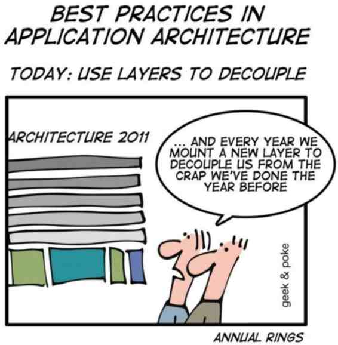

Communication architecture
Pub/Sub and Mediator pattern taken to the limits
@naugtur, meet.js 06.2012Today's menu:
- Who's communicating?
- Why communicate?
- Publisher/Subscriber
- Mediator
- Overlord
- Bits of code
- And some intermissions you could take
and turn to a full-blown presentation
Who's communicating?
You should not need this slide because you know what a module is. Right?
Revealing module pattern(function(){
var privateVariable;
function privateMethod(){ /*...*/ }
function publicMethod(){ /*...*/ }
return {
public:publicMethod
}
})()define(['dependency1','dependency2'],function(Dep1,Dep2){
var privateVariable;
function privateMethod(){ /*...*/ }
function publicMethod(){ /*...*/ }
return {
public:publicMethod
}
})()Why communicate?
- All modules visible to all modules? No.
- Decoupling
- No pollution of global scope
- Easy to extend existing behaviour
It's a good practice
Publisher/Subscriber pattern

subscribe('newsTopic',function(){
console.log('hello1');
});
subscribe('newsTopic',function(){
console.log('hello2');
});
subscribe('otherTopic',function(){
console.log('good evening');
});publish('newsTopic');> hello1
> hello2Publisher/Subscriber
The awesome
- Great for implementing any cooperation
- Decoupling, one publisher calls all subscribers without knowing them.
Extend functionality without touching the old code!
Publisher/Subscriber
The lame
- No feedback
- No built-in returning information.
Makes you want to create globals
Intermission
http://jquerymobile.com/themeroller/Did you know that jQuery Mobile Framework finally has a themeroller?
Lots of new stuff is going on. And it's production quality.
Mediator pattern

- Creates an interface for peers to communicate
- Serves as an abstraction layer for communication
- Allows communication between multiple peers without them knowing about any of the other
Implementation
When looking for mediator implementations in JS I only found Pub/Sub with minor improvements.
And JavaScript can do so much more!
Introducing Overlord.js
- Subscribe with multiple methods
- The publisher gets a single object to call methods from
- All modules get their methods called transparently
- The caller gets all the results
Overlord.js
The flow
register, getFacade, call
peer A
var doSomething=function(){
return 'hello from A'
};
//Expose API to my
// functionalities
Overlord.register('myAPI',{
hello:doSomething
});
...
peer B
var doSomething=function(){
return 'hello from B'
};
//Expose API to my
// functionalities
Overlord.register('myAPI',{
hello:doSomething
});
...
peer C
...
//choose an API to use
var facade =
Overlord.getFacade('myAPI');
//Call a method
facade.hello();
> [ "hello from A",
"hello from B" ]
Overlord.js
Loose API interface
Overlord.register('myAPIName',{
inc:function(a){return a+1;},
dec:function(a){return a-1;}
});
Overlord.register('myAPIName',{
inc:function(a){return a+10;}
}); var facade=Overlord.getFacade('myAPIName');
facade.inc(3);
> [ 4, 13 ]
facade.dec(3);
> [ 2 ]
Overlord.js
Strict API interface - define first
Overlord.defineInterface('myAPIName',['inc','dec']);
Overlord.register('myAPIName',{
inc:function(a){return a+1;},
dec:function(a){return a-1;}
});
Overlord.register('myAPIName',{
inc:function(a){return a+10;}
});
> exception:
"Given object is not an implementation for API:myAPIName. Method dec is missing" Overlord.js
Facade always up to date
Overlord.register('myAPIName',{
inc:function(a){return a+1;},
dec:function(a){return a-1;}
});
var facade=Overlord.getFacade('myAPIName');
Overlord.register('myAPIName',{
inc:function(a){return a+10;}
});
facade.inc(3);
> [ 4, 13 ] Intermission
unhosted.orgSeparate applications from user data. And don't write back-end for html5 apps anymore :)
Overlord.js
Safe to call anything, errors are being caught
Overlord.register('myAPIName',{
inc:function(a){return a+1;},
});
Overlord.register('myAPIName',{
inc:function(a){return a.misspeledPropName.something;}
});
var facade=Overlord.getFacade('myAPIName');
facade.inc(3);
> [ 4 ]
Overlord.getDebugInfo('myAPIName')
> {
errors:
[ { stack: [Getter/Setter],
arguments: [Object],
type: 'non_object_property_load',
message: [Getter/Setter] } ],
method: 'inc',
apiObject:
{ definition: { inc: true },
stronglyTypedInterface: false,
implementations: [ [Object], [Object] ],
lastErrors: [ [Object] ],
lastCall: 'inc',
facade: { inc: [Function] } } }
Shameless plug
http://cogision.com/kontaktCogision is having a summer internship for students and fresh graduates.
( meet.js ).publish( 'end' );
You can find me on twitter, github and stackoverflow. Just look fornaugtur
graphics from The Noun Project